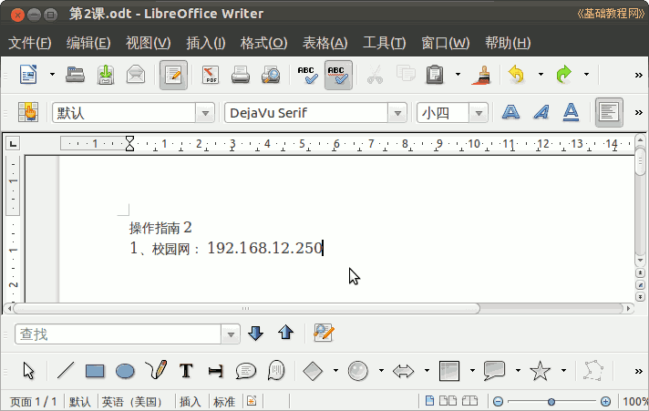

2012-2013 第二学期七年级文字处理和网页教学设计
作者：TeliuTe 来源：基础教程网
二、学会write窗口 返回目录 下一课
（一）教学设计
1、学习目标：学会write窗口
2、注意事项：保存按钮
3、教学过程：
1）教师准备学案和板书；
2）学生整队进入，开机抄黑板上笔记；
3）教师讲解板书演示操作；
4）学生打指法、日志、完成操作；
5）教师打勾记录学生指法成绩，检查日志和操作；
注：学生抄完笔记就开始打指法、日志，老师讲完后再继续完成；
（二）板书设计(学生笔记)
第2课 学会write窗口
1.最上面标题栏，看文件名
2. 菜单栏所有操作命令
3. 工具栏常用保存和撤销
4. 格式栏设置字体和字号
操作图示：

（三）课后记 2013-03-01 13:42
--
早上上班刚好碰到书记，让把精神文明的帖让看一下
本来想着不弄的，看来还得添加进去
--
作为操作指南也可以，输到write里再操作一下
网址练习小键盘的，英文、中文混合输入
--
严格要求是好的，或者多是从技术课堂角度看学生
不需要太多的情感目标，知识能力为主，也就没太多的分支
--
这两个班急躁，上学期的代理错误到现在忘记了
结果不会改，输完不检查，反反复复改正错误费时间
--
让学生先把指法和日志打完，这样就有时间讲完课就操作
这样就不容易忘记，及时复习巩固所讲的内容
--
有几个访客登录的，也就是上节课就错了
要求一下不要返工，每节课的任务完成
--
上节课的任务里应该包含正确登录，不过已经很多加不到板书里
可以在课前提醒一下，每一步正确后接着往下
--
检查的时候，挨着的同学同时检查，这样也可以提高速度
最后可以同时检查，大部分同学都完成了，没做完的也可以先检查
--
返回目录 下一课
本教程由86团学校TeliuTe制作|著作权所有
基础教程网：http://teliute.org/
美丽的校园……
转载和引用本站内容，请保留作者和本站链接。